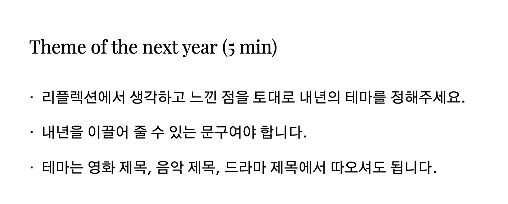

YEAR-END WORKSHOP
Check in
_____ of the year
History map
Reflection
Coffee break
Theme of the next year
Self development circle
Check out
본 콘텐츠는
이진재님의 글
을 웹페이지로 표현한 것입니다.
Published by
Minseop Kim
Theme of the next year

리플렉션에서 생각하고 느낀 점을 토대로 내년의 테마를 정해주세요.
내년을 이끌어 줄 수 있는 문구여야 합니다.
테마는 영화 제목, 음악 제목, 드라마 제목에서 따오셔도 됩니다.